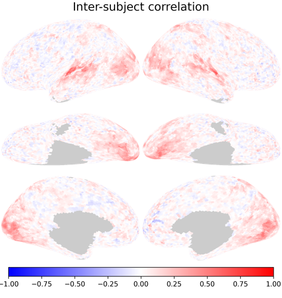

2. Intersubject Correlation (ISC) Analysis#
1. Setup environment and import libraries/data#
%%capture
%pip install -U neuroboros hyperalignment
# import libraries
import numpy as np
import neuroboros as nb
import matplotlib.pyplot as plt
from scipy.spatial.distance import pdist
from scipy.stats import pearsonr, zscore
# load data
dset = nb.Forrest()
sids = dset.subjects
# data for subject 1 and 2 (Python starts label with 0)
dm1 = dset.get_data(sids[0], 'forrest', 1, 'lr')
dm2 = dset.get_data(sids[1], 'forrest', 1, 'lr')
---------------------------------------------------------------------------
KeyboardInterrupt Traceback (most recent call last)
Cell In[4], line 3
1 # data for subject 1 and 2 (Python starts label with 0)
2 dm1 = dset.get_data(sids[0], 'forrest', 1, 'lr')
----> 3 dm2 = dset.get_data(sids[1], 'forrest', 1, 'lr')
File ~/miniconda3/envs/book/lib/python3.12/site-packages/neuroboros/datasets/__init__.py:369, in Dataset.get_data(self, sid, task, run, lr, space, resample, prep, fp_version, force_volume, prep_kwargs, slicer)
366 if slicer is None:
367 slicer = getattr(self, 'slicer', None)
--> 369 dm = self.load_data(sid, task, run, lr, space, resample, fp_version)
370 confounds = self.load_confounds(sid, task, run, fp_version)
371 if space_kind == 'surface':
File ~/miniconda3/envs/book/lib/python3.12/site-packages/neuroboros/datasets/__init__.py:177, in Dataset.load_data(self, sid, task, run, lr, space, resample, fp_version)
173 def load_data(self, sid, task, run, lr, space, resample, fp_version=None):
174 if lr == 'lr':
175 dm = np.concatenate(
176 [
--> 177 self.load_data(sid, task, run, lr_, space, resample, fp_version)
178 for lr_ in 'lr'
179 ],
180 axis=1,
181 )
182 return dm
184 if fp_version is None:
File ~/miniconda3/envs/book/lib/python3.12/site-packages/neuroboros/datasets/__init__.py:210, in Dataset.load_data(self, sid, task, run, lr, space, resample, fp_version)
200 fn = [
201 fp_version,
202 'renamed',
(...)
206 f'sub-{sid}_task-{task}_run-{run:02d}.npy',
207 ]
208 fn = self.renaming['/'.join(fn)].split('/')
--> 210 dm = self.dl_dset.get(fn, on_missing='raise').astype(np.float64)
212 return dm
File ~/miniconda3/envs/book/lib/python3.12/site-packages/neuroboros/io.py:78, in DatasetManager.get(self, fn, load_func, on_missing)
75 local_fn = os.path.join(self.root, fn)
77 if not os.path.exists(local_fn):
---> 78 self.download(fn, local_fn, on_missing=on_missing)
79 if not os.path.exists(local_fn):
80 return None
File ~/miniconda3/envs/book/lib/python3.12/site-packages/neuroboros/io.py:124, in DatasetManager._download_alternative(self, fn, local_fn, on_missing)
121 url = self.url_base + fn.replace('\\', '/')
123 try:
--> 124 r = requests.get(url)
125 except requests.exceptions.RequestException as e:
126 raise RuntimeError(f"Error downloading {url}: {e}")
File ~/miniconda3/envs/book/lib/python3.12/site-packages/requests/api.py:73, in get(url, params, **kwargs)
62 def get(url, params=None, **kwargs):
63 r"""Sends a GET request.
64
65 :param url: URL for the new :class:`Request` object.
(...)
70 :rtype: requests.Response
71 """
---> 73 return request("get", url, params=params, **kwargs)
File ~/miniconda3/envs/book/lib/python3.12/site-packages/requests/api.py:59, in request(method, url, **kwargs)
55 # By using the 'with' statement we are sure the session is closed, thus we
56 # avoid leaving sockets open which can trigger a ResourceWarning in some
57 # cases, and look like a memory leak in others.
58 with sessions.Session() as session:
---> 59 return session.request(method=method, url=url, **kwargs)
File ~/miniconda3/envs/book/lib/python3.12/site-packages/requests/sessions.py:589, in Session.request(self, method, url, params, data, headers, cookies, files, auth, timeout, allow_redirects, proxies, hooks, stream, verify, cert, json)
584 send_kwargs = {
585 "timeout": timeout,
586 "allow_redirects": allow_redirects,
587 }
588 send_kwargs.update(settings)
--> 589 resp = self.send(prep, **send_kwargs)
591 return resp
File ~/miniconda3/envs/book/lib/python3.12/site-packages/requests/sessions.py:746, in Session.send(self, request, **kwargs)
743 pass
745 if not stream:
--> 746 r.content
748 return r
File ~/miniconda3/envs/book/lib/python3.12/site-packages/requests/models.py:902, in Response.content(self)
900 self._content = None
901 else:
--> 902 self._content = b"".join(self.iter_content(CONTENT_CHUNK_SIZE)) or b""
904 self._content_consumed = True
905 # don't need to release the connection; that's been handled by urllib3
906 # since we exhausted the data.
File ~/miniconda3/envs/book/lib/python3.12/site-packages/requests/models.py:820, in Response.iter_content.<locals>.generate()
818 if hasattr(self.raw, "stream"):
819 try:
--> 820 yield from self.raw.stream(chunk_size, decode_content=True)
821 except ProtocolError as e:
822 raise ChunkedEncodingError(e)
File ~/miniconda3/envs/book/lib/python3.12/site-packages/urllib3/response.py:1060, in HTTPResponse.stream(self, amt, decode_content)
1058 else:
1059 while not is_fp_closed(self._fp) or len(self._decoded_buffer) > 0:
-> 1060 data = self.read(amt=amt, decode_content=decode_content)
1062 if data:
1063 yield data
File ~/miniconda3/envs/book/lib/python3.12/site-packages/urllib3/response.py:949, in HTTPResponse.read(self, amt, decode_content, cache_content)
946 if len(self._decoded_buffer) >= amt:
947 return self._decoded_buffer.get(amt)
--> 949 data = self._raw_read(amt)
951 flush_decoder = amt is None or (amt != 0 and not data)
953 if not data and len(self._decoded_buffer) == 0:
File ~/miniconda3/envs/book/lib/python3.12/site-packages/urllib3/response.py:873, in HTTPResponse._raw_read(self, amt, read1)
870 fp_closed = getattr(self._fp, "closed", False)
872 with self._error_catcher():
--> 873 data = self._fp_read(amt, read1=read1) if not fp_closed else b""
874 if amt is not None and amt != 0 and not data:
875 # Platform-specific: Buggy versions of Python.
876 # Close the connection when no data is returned
(...)
881 # not properly close the connection in all cases. There is
882 # no harm in redundantly calling close.
883 self._fp.close()
File ~/miniconda3/envs/book/lib/python3.12/site-packages/urllib3/response.py:856, in HTTPResponse._fp_read(self, amt, read1)
853 return self._fp.read1(amt) if amt is not None else self._fp.read1()
854 else:
855 # StringIO doesn't like amt=None
--> 856 return self._fp.read(amt) if amt is not None else self._fp.read()
File ~/miniconda3/envs/book/lib/python3.12/http/client.py:479, in HTTPResponse.read(self, amt)
476 if self.length is not None and amt > self.length:
477 # clip the read to the "end of response"
478 amt = self.length
--> 479 s = self.fp.read(amt)
480 if not s and amt:
481 # Ideally, we would raise IncompleteRead if the content-length
482 # wasn't satisfied, but it might break compatibility.
483 self._close_conn()
File ~/miniconda3/envs/book/lib/python3.12/socket.py:708, in SocketIO.readinto(self, b)
706 while True:
707 try:
--> 708 return self._sock.recv_into(b)
709 except timeout:
710 self._timeout_occurred = True
File ~/miniconda3/envs/book/lib/python3.12/ssl.py:1252, in SSLSocket.recv_into(self, buffer, nbytes, flags)
1248 if flags != 0:
1249 raise ValueError(
1250 "non-zero flags not allowed in calls to recv_into() on %s" %
1251 self.__class__)
-> 1252 return self.read(nbytes, buffer)
1253 else:
1254 return super().recv_into(buffer, nbytes, flags)
File ~/miniconda3/envs/book/lib/python3.12/ssl.py:1104, in SSLSocket.read(self, len, buffer)
1102 try:
1103 if buffer is not None:
-> 1104 return self._sslobj.read(len, buffer)
1105 else:
1106 return self._sslobj.read(len)
KeyboardInterrupt:
print(dm1.shape, dm2.shape)
(451, 19341) (451, 19341)
# number of timeseries/vertices
nt, nv = dm1.shape
# compute Pearson R correlation between two subjects
isc = np.zeros((nv,))
for i in range(nv):
isc[i] = pearsonr(dm1[:, i], dm2[:, i])[0]
<ipython-input-23-4c25b7b05f14>:3: ConstantInputWarning: An input array is constant; the correlation coefficient is not defined.
isc[i] = pearsonr(dm1[:, i], dm2[:, i])[0]
# or calculate z-score
isc2 = np.mean(
zscore(dm1, axis=0) * zscore(dm2, axis=0),
axis=0)
np.testing.assert_allclose(isc, isc2)
nb.plot(isc,
title='Inter-subject correlation',
vmax=1, vmin=-1, cmap='bwr')

nb.plot(isc2,
title='Inter-subject correlation',
vmax=1, vmin=-1, cmap='bwr')
dms = [dset.get_data(sid, 'budapest', 1, 'lr')
for sid in sids]
dms = np.stack(dms, axis=0)
dms.shape
isc_all = 1 - np.stack(
[pdist(dms[:, :, i], 'correlation')
for i in range(nv)],
axis=1)
print(isc_all.shape)
avg = np.nanmean(isc_all, axis=0)
nb.plot(avg,
title='Inter-subject correlation',
vmax=1, vmin=-1, cmap='bwr',
width=600)